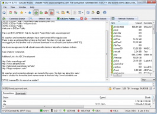

DC++
From ADCPortal Wiki
|  DC++ 0.777 running in Windows 7 | |
| Developed by | Jacek Sieka |
|---|---|
| Initial release | 2001 |
| Stable release | 0.770 (2010-07-05) |
| Beta release | 0.762 (2010-05-16) |
| Written in | C++, C |
| Platform | Windows |
| Available in | 49 languages |
| Type | Client |
| License | GNU GPL 2 |
| Website | DC++ Official Website DC++ Launchpad Site |
Introduction
DC++ is the most used client for the DC networks (and ADC there is). First version was available around fall 2001. It is maintained by the ADC protocol creators so it has the latest ADC implementations and is a base for most of the other clients on the market. Also it has the biggest share on it, around 90 %. DC++ was the first ADC client (since version 0.403, around 2004). It's also the first ADC 1.0 client (since 0.704).
Advantages
- Very easy to use with a familiar design and buttons/menus makes it simple for new users and old ones as well.
- Joins multiple hubs at the same time
- List of bookmark-like favorite hubs and users
- Shares large files and many files per your organization scheme
- TIGR support for passwords, hashes and more
- Search across all (or selected) connected hub by type, size, or name
- Resume of downloads, with optional search for alternate sources
- Logging options and configuration for chat, private messages, downloads, and uploads
- Autoconfiguration of UPnP routers
- MAGNET link support for linking to specific content
- Automatic and manual download priorities
- Saving of user's file lists for browsing and queueing
- Translation into other languages by custom supplied gettext po language files
- Segmented downloading
- Having the latest in ADC technology makes it a good choice for ADC user and even better for ADC developer
- It's the ADC software that implements the most extensions there are for the protocol
Disadvantages
- Lack of emoticon system
- Lack of operator tools
Misc
Software Administrator : Jacek Sieka
Contributors: poy, Fredrik Ullner, eMTee, Todd Pederzani, and more